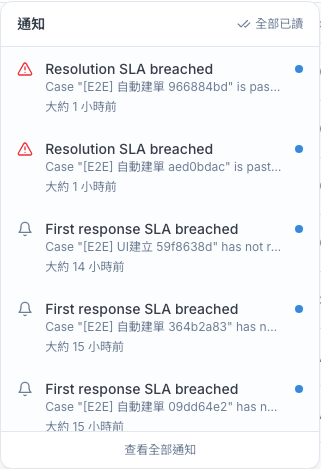
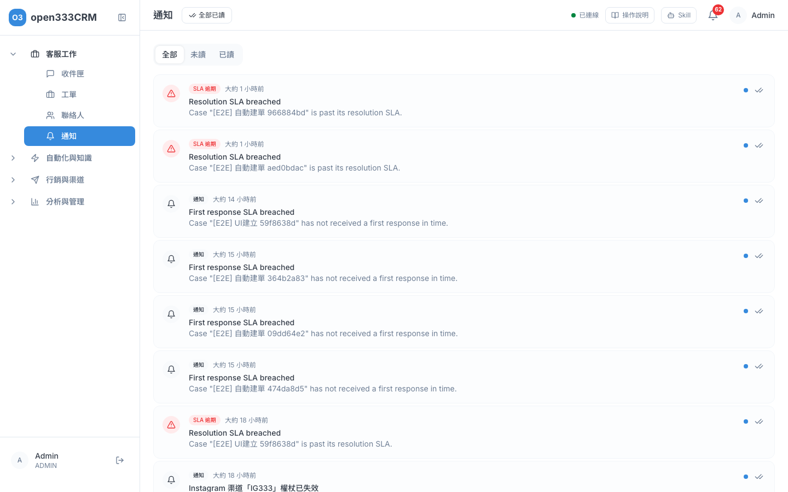

CHAPTER 04 · 客服工作
通知
工單指派給你、客人傳訊息來、工單快要逾期，系統都會通知你。點一下通知，就會直接帶你到要處理的地方。
1 這頁能做什麼
通知是系統提醒你「這件事需要你處理」的地方。每個人只會看到發給自己的通知，所有登入的人都可以使用，不需要另外開權限。通知有兩個入口：畫面右上角的鈴鐺，以及側欄「客服工作 → 通知」。
2 鈴鐺：隨時看最新通知
不管你在哪一頁，右上角都有一個鈴鐺。鈴鐺上的紅色數字是你還沒看的通知數，超過 99 會顯示「99+」。新通知進來時數字會自動更新，不用重新整理頁面。

- 點右上角的鈴鐺，展開最新 10 則通知。
- 點其中一則，它會變成已讀，並帶你到相關的頁面。
- 想一次清掉紅色數字，按右上角「全部已讀」。
- 按最下面「查看全部通知」，進入完整的通知列表。
- 點下拉以外的地方就會收起來。
3 通知列表
側欄點「通知」，或在鈴鐺按「查看全部通知」，就能看到你所有的通知。

- 用上方的「全部」「未讀」「已讀」切換要看哪些通知。
- 點一張卡片，它會變成已讀並帶你到相關頁面。
- 只想標成已讀、不想跳頁，按卡片右邊的雙勾圖示（滑鼠移上去會顯示「標記已讀」）。
- 按頁面上方的「全部已讀」，一次把所有未讀都標成已讀。
- 每頁 20 則，用最下面的「上一頁」「下一頁」翻頁。
| 畫面上的樣子 | 意思 |
|---|---|
| 底色較深、右邊有藍點 | 還沒看的通知 |
| 小標籤「工單指派」「工單升級」「SLA 警告」「SLA 逾期」「首次回應警告」「首次回應逾期」「客戶等待逾時」「自動化通知」「新訊息」 | 通知的類型。其他類型（例如權杖失效、AI 用量、低分評價）一律顯示「通知」 |
| 「3 分鐘前」「大約 1 小時前」 | 通知送出的時間 |
ℹ️
時限相關的通知標題會直接寫出發生什麼事：「首次回應即將逾期」「首次回應已逾期」「解決期限即將逾期」「解決期限已逾期」「客戶等待過久」。自動化規則送來的通知，標題都是「自動化規則通知」，規則設定的訊息內容寫在標題下面那行。
ℹ️
如果明明鈴鐺有紅色數字，列表卻顯示「目前沒有通知」，或按了「全部已讀」沒反應，請重新整理頁面再試一次。通知目前不能刪除，也不能關掉某一類通知。
4 點了會跳去哪裡
每種通知都會帶你到最需要處理的地方：
| 通知 | 點了會到 |
|---|---|
| 工單已指派給您 | 那張工單的詳情頁 |
| 工單已升級 | 那張工單的詳情頁 |
| 首次回應／解決期限即將逾期、已逾期，客戶等待過久 | 那張工單的詳情頁 |
| 自動化規則通知 | 有工單時到那張工單的詳情頁；沒有工單時到收件匣那段對話 |
| 收到新訊息／對話已指派給您 | 收件匣，並直接打開那段對話 |
| Facebook／Instagram 渠道「某某」權杖已失效 | 設定 → 渠道管理，去更新權杖（見「15 · 渠道管理」） |
| AI 用量已達 80%／AI 用量已達上限 | 方案與帳務（見「14 · 方案與帳務」） |
| CSAT 低分警報 | 工單列表 |
| 資料匯出完成、資料刪除完成 | 見下方說明 |
ℹ️
CSAT 低分警報點了只會到工單列表，不會直接打開那張工單；請照通知內容寫的工單名稱，在工單列表搜尋。資料匯出完成的通知目前點了會找不到頁面，需要匯出檔時請洽系統管理員協助。資料刪除完成只是告知，沒有連結。
5 誰會收到哪些通知
誰收到通知，主要看你的角色（管理員、主管、客服），以及這件事是不是指派給你。下表的「主管」與「管理員」指的是帳號角色，可在「16 · 人員、角色與權限」查看。
| 發生什麼事 | 誰會收到 |
|---|---|
| 工單指派給某人 | 被指派的那個人 |
| 對話指派給某人 | 被指派的那個人（小標籤會顯示「新訊息」） |
| 客人傳新訊息，對話已經有負責人 | 只有負責的那個人 |
| 客人傳新訊息，對話還沒有負責人 | 所有管理員與主管 |
| 工單升級 | 看升級時「通知對象」勾了誰：勾「Supervisor（主管）」會通知所有主管與管理員，勾「原負責客服」會通知原本負責的人。按升級的人自己不會收到 |
| 工單快逾期（SLA 預警） | 工單負責人 |
| 工單已逾期（SLA 逾期） | 工單負責人，另外加上所有管理員與主管 |
| 客人給低分評價（CSAT 2 分以下） | 所有主管（管理員不會收到） |
| Facebook／Instagram 渠道權杖失效 | 所有管理員，另外寄 Email |
| AI 用量達 80% 或用完 | 所有管理員，另外寄 Email |
| 自動化規則的「通知主管」動作 | 所有主管與管理員 |
| 自動化規則的「傳送通知」動作 | 規則裡「通知誰」指定的客服；沒指定時依序找工單負責人、對話負責客服，都沒有就通知所有主管與管理員（見「05 · 自動化」） |
✨
管理員和主管的通知太多？沒有負責人的對話，每來一則訊息就會通知所有管理員與主管。在收件匣把對話指派給負責的客服（做法見「01 · 收件匣」），之後這段對話的新訊息就只會通知那位負責人。